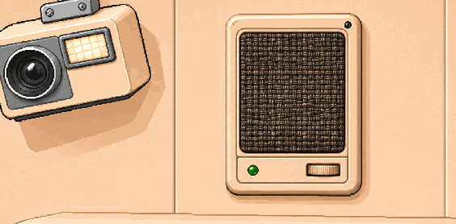
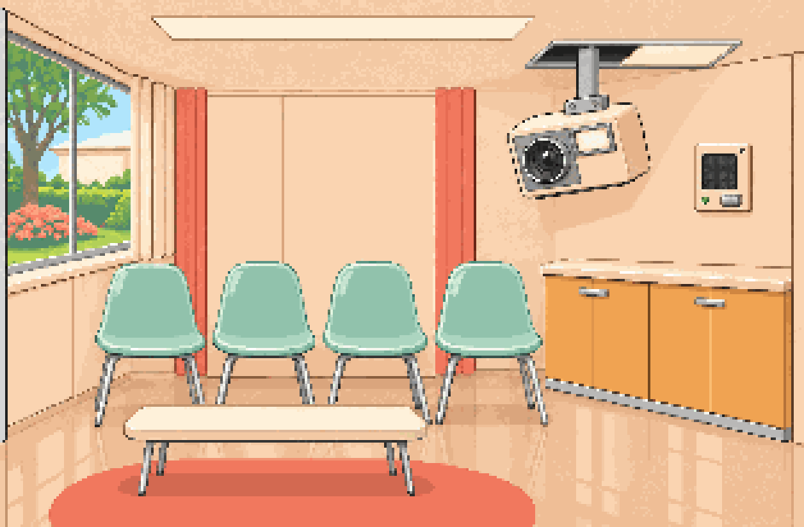
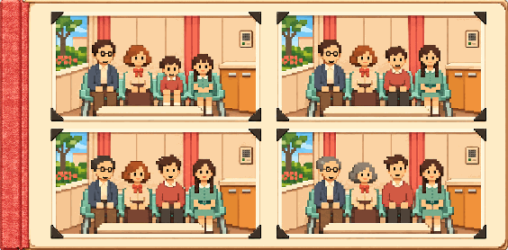
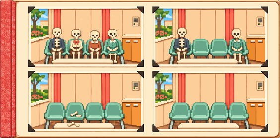
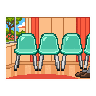
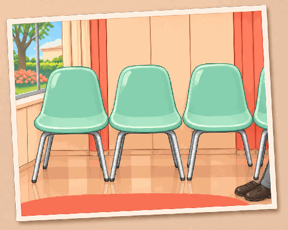
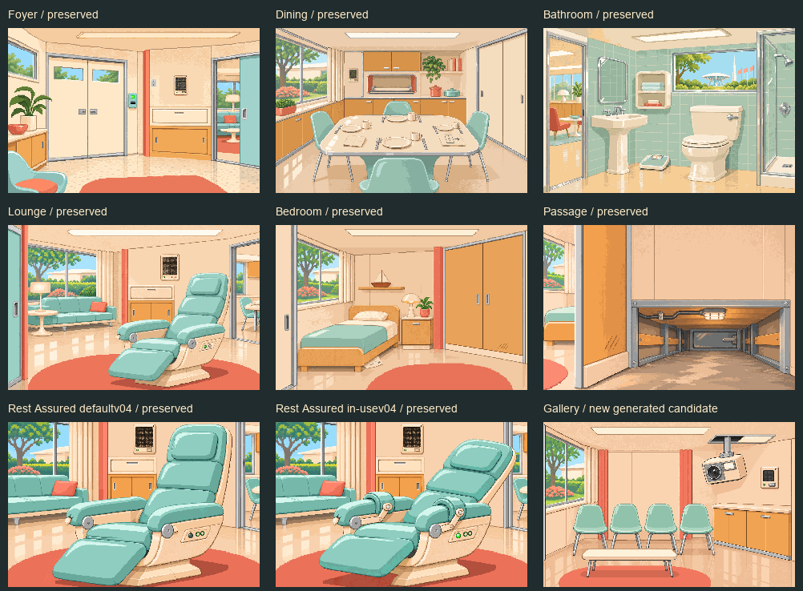
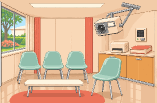
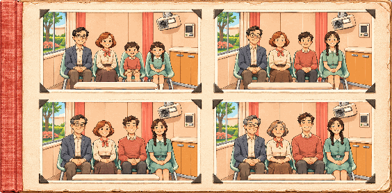
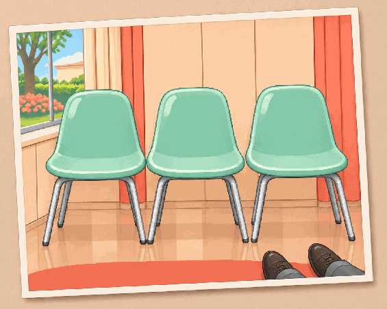

314×206 · RGB · generated / approval pending

564×278 · RGB · generated / approval pending
Chapter1 Batch3 · all seven candidates generated, pending owner approval.
Private branch agent/ch01-art-batch03-20261115. Baseline ae7ae2bfe7821f87ebc5dca686829592b7c27f49. Commit and push verification.
Artwork package commit 360bf00d1f9b71b2c39979e7e9347a8e0f660995 · private GitHub commit. Delivery receipt follows without image changes.
Four chairs in one row; camera lowers through ceiling hatch. Clear cabinet surface. No people or historical revelations in these views.
314×206 · RGB · generated / approval pending

564×278 · RGB · generated / approval pending

Download native spatial comparison. B keeps the same wall installation: camera to the left, flush intercom above the blond cabinet, tighter portrait framing.
Read each page left-to-right, top-to-bottom. Simplified pixel figures; same family, seating, paper and binding. No taking camera appears inside any photograph. Historical people/remains occur only within the mounted prints.

564×278 · RGB · generated / approval pending

564×278 · RGB · generated / approval pending

564×278 · RGB · generated / approval pending
Download chronological contact sheet. Three visual pages need reviewed PMO support; no runtime changes are included.
Three whole empty chairs plus roughly one quarter of the fourth at the right edge. Only the seated occupant’s shoes and lower legs are visible; no upper body or face. This print is distinct from the historical album.

96×96 · RGBA · generated / approval pending

565×451 · RGB · generated / approval pending
Download native slot/inspection comparison. Checkerboard is review-page CSS, not pixels in F.

Eight preserved House scenes beside the new gallery. Rest Assuredv04 pair, bathroom and all other baseline images unchanged.
Superseded only; original generation sources are preserved too.



No story, registry, engine, production or public Art Lab changes. No Chapter2 work.